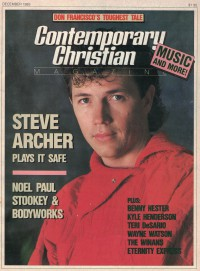

CMnexus
:
Contemporary Christian culture, music, and media.
Magazines
Profiles
Dove Awards
cmnexus.org
CM
nexus
→
Profiles
→
A
Steve Archer
On the cover

December 1985
CCM
Media coverage:
Dec 1985 in
CCM
"You Don't Just Sashay Toward The Mark", by
Scott Pinzon
Oct 1998 in
Charisma
"Spotlight: Steve Archer", by
Rhonda Sholar
Dec 1998 in
CCM
"Rewind: Keep Singin' That Love Song", by
Devlin Donaldson
Albums & reviews:
1982
:
Solo
Jun 1982 in
CCM
, by
Thom Granger
Jul 1982 in
Christian Life
, by
Jim Burkhardt
1983
:
Through His Eyes of Love
Mar 1984 in
Charisma
, by
Richard Nakamoto
1985
:
Action
Nov 1985 in
MusicLine
, by
Bruce A. Brown
Nov 1985 in
CCM
, by
Bob Darden
1987
:
Off The Page
Feb 1988 in
CCM
, by
Christopher Dale
1988
:
Hits
1998
:
Stay Right Here
Books about Steve Archer
"
Steve Archer
" in
The Encyclopedia of Contemporary Christian Music
(
Mark Allan Powell
,
2002
)
CMnexus
(noun)
The magazine index
of modern music
and Christianity
© 2011 CMnexus. Last updated December 2020.
Contact:
Rants and other correspondence to:
editor -AT- cmnexus
-DØT- org
About